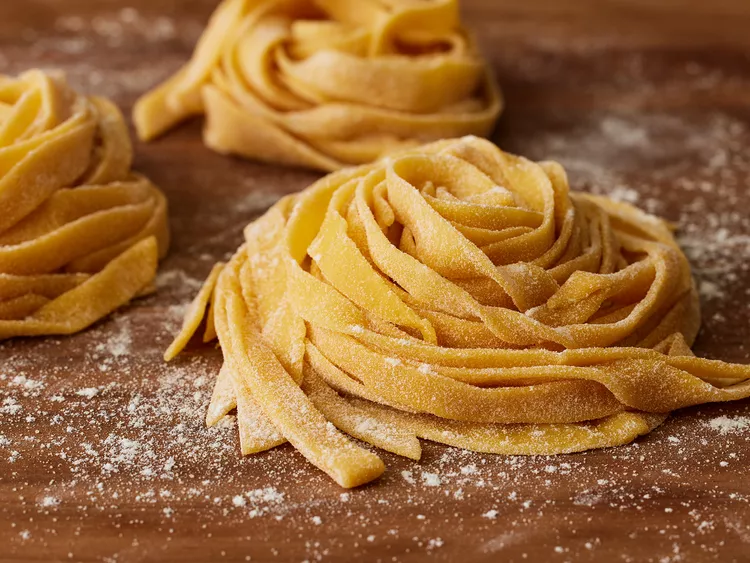

Home
Fresh Semolina and Egg Pasta

Description
Nothing beats fresh semolina pasta, and this simple recipe is the best thing ever! You can make any style of pasta you like, from fettuccine to ravioli to lasagna.
Ingredients
- 2 cups all-purpose flour
- 2 cups semolina flour
- 1 pinch salt
- 6 large eggs
- 2 tablespoons olive oil
Steps
- Gather all ingredients.
- Sift all-purpose flour, semolina flour, and a pinch of salt together in a large bowl. Make a mountain out of flour mixture on a clean surface; create a deep well in the center. Break eggs into the well and add olive oil. Whisk eggs very gently with a fork, gradually incorporating flour from the sides of the well. When mixture becomes too thick to mix with a fork, begin kneading with your hands.
- Knead dough until it is smooth and supple, 8 to 12 minutes, Dust dough and work surface with semolina as needed to keep dough from becoming sticky. Wrap dough tightly in plastic wrap; allow it to rest at room temperature for 30 minutes.
- Roll out dough with a pasta machine or a rolling pin to desired thickness. Cut into your favorite style of noodle or stuff with your favorite filling to make ravioli.
- Bring a large pot of lightly salted water to a boil. Cook pasta in the boiling water until tender yet firm to the bite, 1 to 3 minutes (or longer depending on thickness). Drain immediately and toss with your favorite sauce.